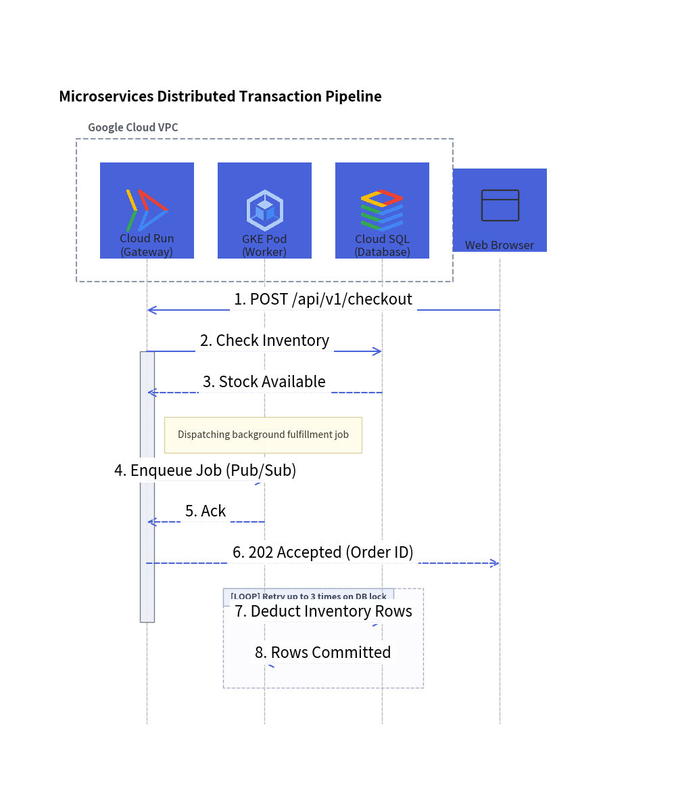
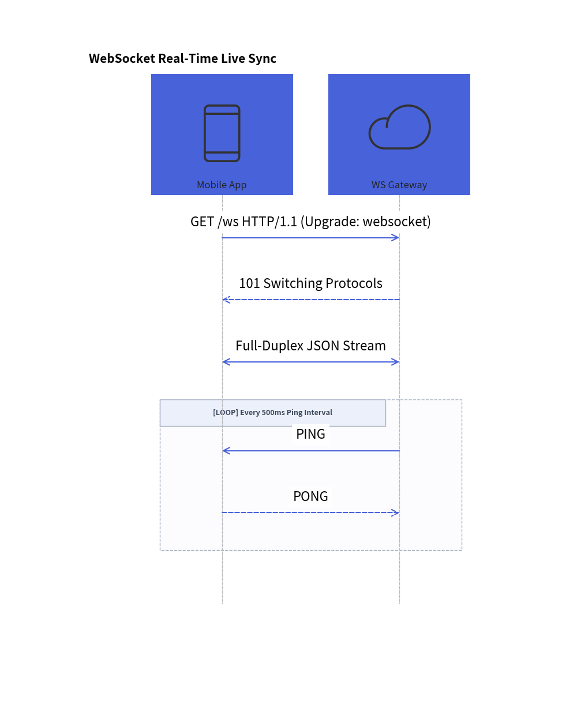

SequenceDiagram: Lifelines, Synchronous Calls & Condition Blocks
SequenceDiagram models chronological interactions and communication protocols between collaborating participants over time. Time progresses strictly downwards along vertical lifelines, with horizontal arrows representing messages.
1. Overview & Key Concepts
Client API Server Database
│ │ │
│ ──POST /login───────►│ │
│ │ ──SELECT user─────►│
│ │ │ █ (Activation)
│ │ ◄──User Record─────│
│ ◄──200 OK (JWT)──────│ │
│ │ │
- Vertical Lifelines: Participants are placed along the horizontal header band, with lifelines extending downwards.
- Message Semantics:
request(): Solid line with filled arrow (―▶). Withis_async=True, renders an open arrow (―>).reply(): Dashed line with filled arrow (---▶).connect(): Bidirectional communication (<->), such as full-duplex WebSocket channels.- Self-Calls:
p.request(p, label)loops back to the caller's own lifeline.
- Activation Boxes:
p.activate()andp.deactivate()draw execution focus rectangles along lifelines. - Autonumbering: Setting
autonumber=Trueautomatically numbers messages sequentially (1.,2.,3., ...). - Pythonic Condition Frames (
with): Use Python context managers (with d.loop(),with d.alt(),with d.opt()) to wrap structured interaction frames cleanly.
2. Constructor & Participant Management
from drawlib.diagrams.sequence import (
Block,
GcpIcon,
Participant,
ParticipantGroup,
PhosphorIcon,
SequenceDiagram,
)
from drawlib.styles import Styles
d = SequenceDiagram(
node_style=Styles.PrimaryFlat,
edge_style=Styles.Primary,
title="Checkout Transaction Pipeline",
autonumber=True, # Auto-number messages (1., 2., 3., ...)
)
# Participant group for clustered backend services
vpc = d.add_group(ParticipantGroup(title="Google Cloud VPC", padding=4.0))
api = vpc.add(Participant("Cloud Run\n(Gateway)", icon=GcpIcon.CLOUD_RUN))
db = vpc.add(Participant("Cloud SQL", icon=GcpIcon.CLOUD_SQL))
# External participant
client = d.add(Participant("Web Browser", icon=PhosphorIcon.BROWSER))
3. Distributed Transaction Pipeline
The following complete example showcases participant groups, cloud icons, activations, sticky notes, asynchronous dispatches, and a retry loop frame:

4. WebSocket Full-Duplex Streaming
For real-time bidirectional streams, use connect() with arrow="<->":

5. Condition Frames & Structured Blocks
Drawlib supports standard UML interaction operators using clean Python context managers:
| Frame Type | Syntax | Standard UML Operator |
|---|---|---|
| Loop | with d.loop("condition"): |
loop |
| Alternative | with d.alt("condition"):with d.else_("condition"): |
alt / else |
| Option | with d.opt("condition"): |
opt |
| Parallel | with d.par("description"): |
par |
Frames automatically compute their enclosing bounding box around all enclosed message lines and draw the standard UML frame tag in the top-left corner.